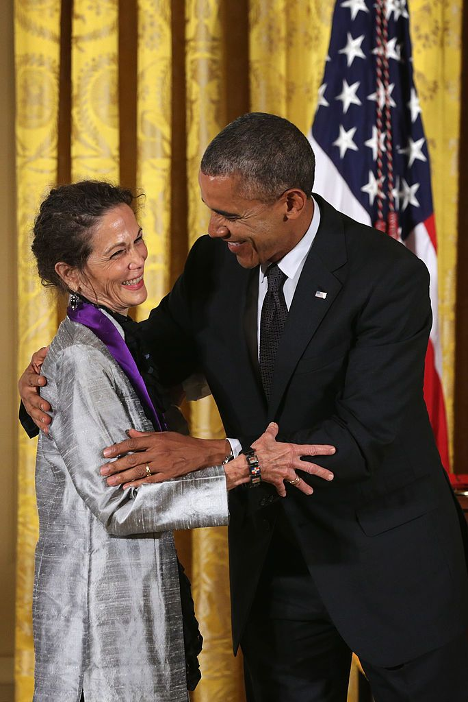
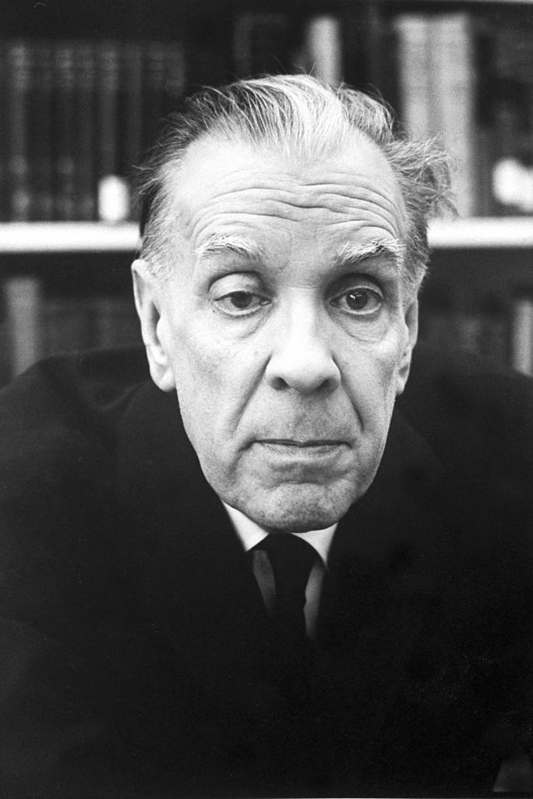

Gabriel García Márquez
Obras destacadas: Cien años de soledad, Amor en tiempos del cólera, Crónica de una muerte anunciada
Aclamado como uno de los más grandes escritores de nuestro tiempo, novelista, periodista y cuentista colombiano. Conocido como el perfeccionador del realismo mágico, un género de ficción que convierte cuestiones de fantasía en situaciones realistas. En 1982 ganó el Premio Nobel de Literatura por la épica Cien Años De Soledad.
Julia Alvarez
Obras destacadas: En la época de las mariposas, Cómo las chicas García perdieron el acento
Poeta y novelista, sus obras exploran la complejidad de vivir como dominicana y estadounidense. Uno de sus libros más notables, En el tiempo de las mariposas, fue adaptado a una película protagonizada por Salma Hayek y Marc Anthony. Recibió en 2013 las Medallas Nacionales de las Artes y ganó el Premio Pura Belpré de Escritura.
Isabel Allende

Obras destacadas: La Casa de los Espíritus, Ciudad de las Bestias, Eva Luna
Voz dominante en el género del realismo mágico, la autora chilena utiliza sus obras más vendidas para actuar como una destacada voz feminista en la literatura hispana. Tiene un Premio Nacional de Literatura y la Medalla Presidencial de la Libertad que le otorgó el presidente Barack Obama.
Jorge Luis Borges
Obras destacadas: Ficciones, El Aleph, The Library Babel
Narrador, ensayista y poeta Argentino, sus obras marcan el inicio del género del realismo mágico popular que arrasó con la literatura latina. Sus mundos de ficción y criaturas míticas tuvieron un inmenso impacto en los escritores que le siguieron. Obtuvo el Premio Cervantes y el Premio Círculo Nacional de Críticos de Libros.
Carlos Fuentes

Obras destacadas: La Muerte de Artemio Cruz, El Viejo Gringo, Aura, Terra Nostra
Fuentes, novelista y diplomático nacido en la Ciudad de México, se ganó el reconocimiento internacional por sus historias que tocaban temas de protesta social, fantasía y psicología. Obtuvo el Premio Miguel de Cervantes, el Premio Rómulo Gallegos y el Premio Internacional Alfonso Reyes.
Mario Vargas Llosa

Obras destacadas: El tiempo del héroe, La casa verde, Conversación en la catedral
Ganador del Premio Nobel de Literatura que es conocido por cruzar géneros, escribiendo prolíficas críticas literarias, misterios de asesinatos, novelas históricas y thrillers políticos. Sus historias están fuertemente influenciadas por su herencia peruana y su participación en la política.
Carlos Ruiz Zafon
Obras destacadas: La sombra del viento, El juego del ángel, El laberinto de los espíritus
Uno de los autores en español más leídos de la actualidad, los libros de fama mundial de Zafon han sido traducidos a más de 50 idiomas. El barcelonés inicialmente solo conservó sus historias misteriosas y fantásticas para el género de los jóvenes adultos. Su primera novela para adultos, La sombra del viento, ha ganado reconocimiento internacional.
Camilo Jose Cela
Obras destacadas: La Familia de Pascual Duarte, La Colmena, San Camilo
Camilo José Cela es ganador del premio Pulitzer. Escribió una gran cantidad de novelas, ensayos, obras de teatro, colecciones de cuentos y libros de viajes. Conocido como uno de los escritores hispanos más importantes de nuestro tiempo. Es conocido por usar un estilo narrativo conocido como tremendismo, una tendencia a enfatizar la violencia y las imágenes grotescas.